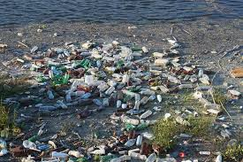
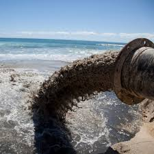

Garbage: The Big Issue
In our oceans, there are currently over 5 trillion pieces of littered plastic. These pieces of plastic make up five ocean garbage patches. The largest is known as the Great Pacific Garbage Patch. The other four are not as big, but are getting bigger. Once the plastic makes it into a garbage patch, it won't just go away. It needs to be removed by hand using nets and vessels. However, garbage is not the only source of pollution. There is also oil which, if released into the ocean, can cause severe damage.
The Effects on Wildlife
The garbage not only impacts the health of people by polluting the water that some may need to drink, but also the ecomony for many reasons, one being the fact that people are putting so much money towards the clean up just for it to become dirty again. However, the biggest impact is on the wildlife. The trash is being ingested by animals that live in and near the water, causing some to struggle with survival and some to, unfortunately, die. It is also effecting the coral reefs because the sea life that should be living there keeping them alive and thriving, is being killed by the trash, oil, and other varieties of pollution.
 .jpeg)
.jpeg)
.jpeg)
How You Can Help
There are many steps people can take to make a difference. One step is to donate!
Another way for you to help is to throw your trash away in a designated trash bin. It doesn't help the environment when people discard of their trash wherever they please. A third way you could help is to set up a beach clean up. Some may say this is too much work but if there are a lot of people helping, it would be a breeze! The last way you could make a truely great difference is if you convert to reusable forks, spoons, knives, straws, and water bottles.